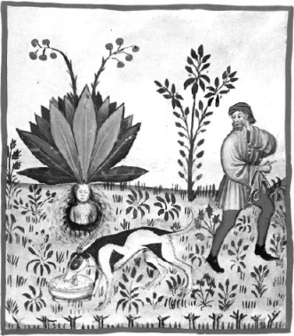

ŞEKİL 4. Adamotu kökü (“Mandragora”): Buradaki resim, Dioskorides’ten beri bilinen bir sahneyi sergilemektedir: Doğasına sadık olmayan irilikte ve kadın şeklinde betimlenmiş zehirli adamotu köküne bir biçimde boynundan bağlı bulunan bir köpek, sahibi tarafından çağrılırken kökü yerinden sökmeye çabalamaktadır. Burada topraktan kökün çıkarılmasında cinsiyet ilişkisi de göz önüne alınmış olup dişi mandragora bitkisi, bir erkek kişi tarafından bir erkek köpek yardımıyla topraktan çıkarılmaktadır; çünkü yalnızca eril yaratıklar dişi mandragoranın üstesinden gelebilmektedir. Bitki ile ilgili eczacılık bilgileri şöyle verilmektedir:
Doğası: 3. dereceden soğuk, 2. dereceden kuru.
Yeğlenen şekli: İri ve kokulu olanı.
Yararı: Koklandığında, şiddetli baş ağrılarına ve uykusuzluğa iyi gelir; fil hastalığına ve derideki kara renkli iltihaplara karşı yakı olarak kullanılır.
Zararı: Duyuların duyarlığını köreltir.
Zararın önlenmesi: Duvar sarmaşığı ile.
Ürettiği: Yenmez.
Şifalı olduğu koşullar: Sıcakkanlı mizaçtaki insanlarda, gençlerde, yaz mevsiminde ve güney bölgelerinde
[Yuhanna ibn Butlan’ın (ölm. 1064) Kitab Takvim el-Sıhha adlı eserinin Latince çevirisi Tacuinum sanitatis in medicina’dan hazırlanan 14. yüzyıl İtalyanca nüshasından, Avusturya Ulusal Kitaplığı]. 29